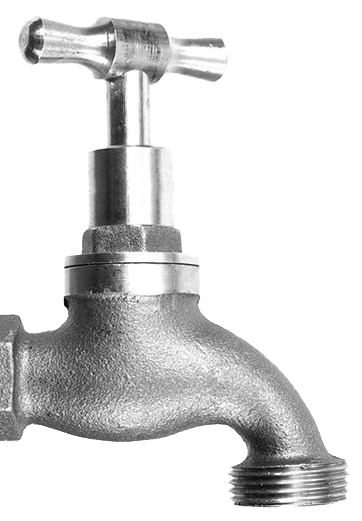
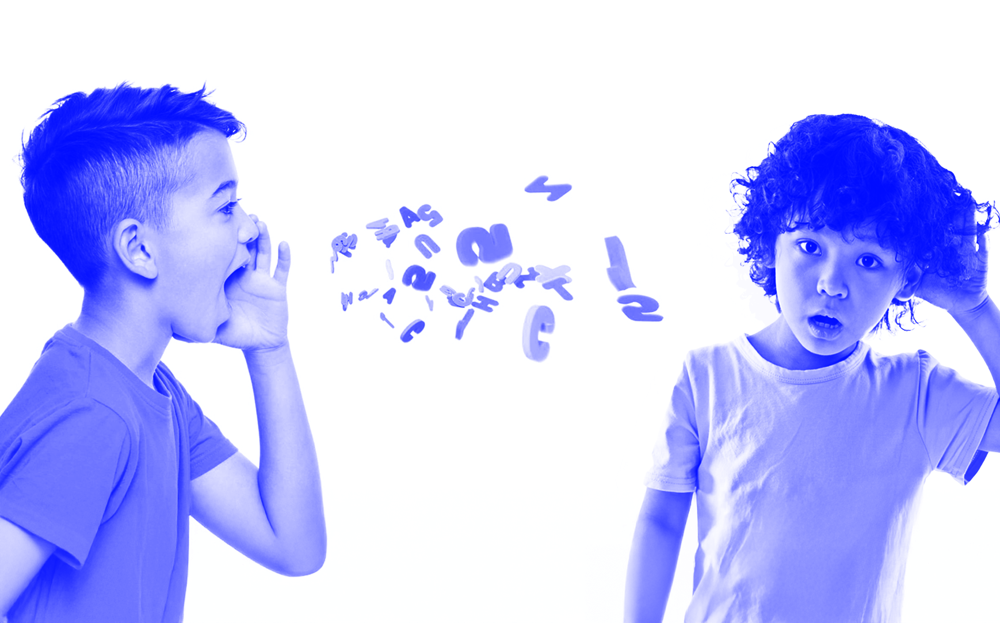
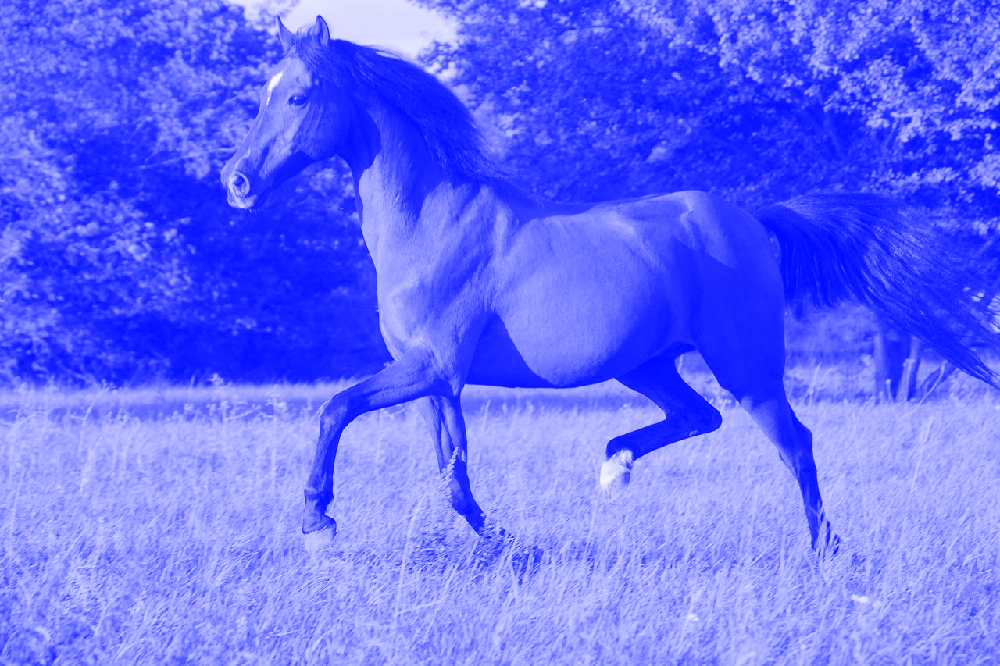
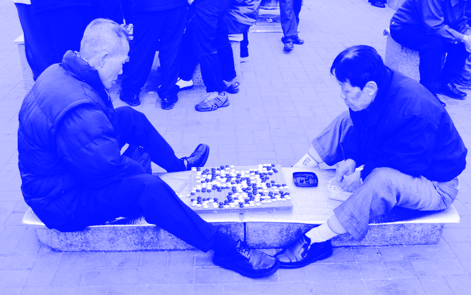

말 요소

말-하다 / [ 말ː]

[명사] ¹
사람의 생각이나 느낌 따위를 표현하고 전달하는 데 쓰는 음성 기호. 곧 사람의 생각이나 느낌 따위를 목구멍을 통하여 조직적으로 나타내는 소리를 가리킨다.
≒ 어사
[명사] ²
음성 기호로 생각이나 느낌을 표현하고 전달하는 행위. 또는 그런 결과물.
≒ 소리
[ 말 ]

[명사] ¹ ◌ 동물
말과의 포유류. 어깨의 높이는 1.2~1.7미터이며, 갈색·검은색·붉은 갈색·흰색 따위가 있다. 네 다리와 목·얼굴이 길고 목덜미에는 갈기가 있으며, 꼬리는 긴 털로 덮여 있다. 초식성으로 3~4세에 성숙하고 16~20세까지 번식하는데, 4~6월이 번식기이고 수태한 후 335일 만에 한 마리의 새끼를 낳는다. 성질이 온순하고 잘 달리며 힘이 세어 농경, 운반, 승용, 경마 따위에 사용한다. 세계 각지에서 기른다.
≒ 마필, 엽자 (Equus caballus)
[ 말 ]

[명사] ¹ ◌ 민속
고누나 윷놀이 따위를 할 때 말판에서 정해진 규칙에 따라 옮기는 패.
≒ 알
[명사] ² ◌ 체육
‘馬’자를 새긴 장기짝. 한 편에 둘씩 넷이 있고, 앞으로 두 칸 옆으로 한 칸, 또는 앞으로 한 칸 옆으로 두 칸 건너 밭으로 다닌다.
= 말